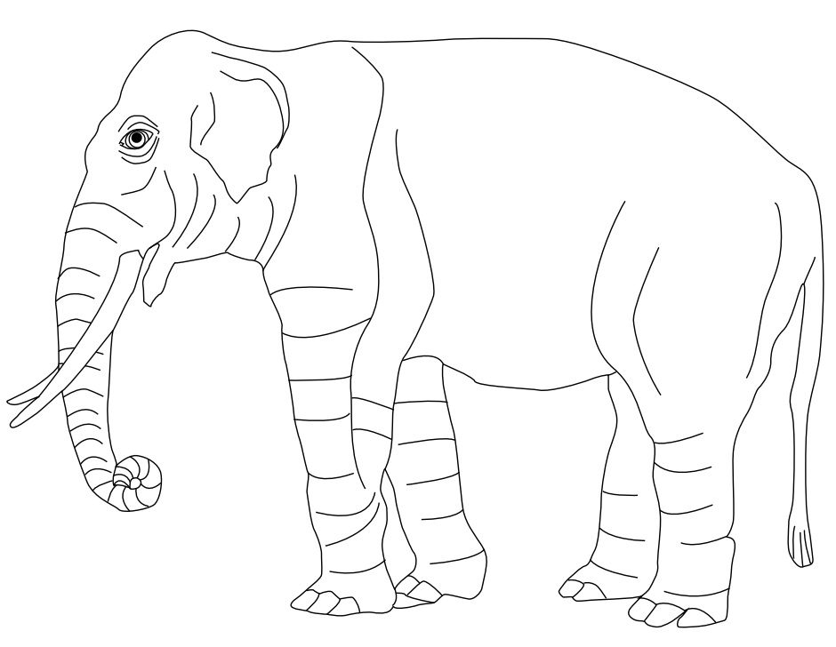

1 + 1[1] 2Quarto enables you to weave together content and executable code into a finished document. To learn more about Quarto see https://quarto.org.
When you click the Render button a document will be generated that includes both content and the output of embedded code. You can embed code like this:
1 + 1[1] 2You can add options to executable code like this:
[1] 4The echo: false option disables the printing of code (only output is displayed).
To include executable expressions within markdown, enclose the expression in {r} or r.
For example, we can use inline code to state the number of observations in iris data by using:
There are 150 observations in iris data.
To create a sublist in Quarto, you typically need to indent the sublist item by two to four spaces, but four spaces is the most widely supported and safest choice.
Preparation
1.1. Gather materials
1.2. Set up environment
Execution
2.1. Run code
2.2. Save results
You can create tables in Quarto using standard Markdown syntax. At minimum, you need pipes (|) to separate columns and hyphens (-) under the header row:
| Column A | Column B |
|---|---|
| Row 1 | Data A |
| Row 2 | Data B |
To add a caption and enable cross-references, wrap your table in a Div with an identifier and place the caption immediately after:
| Feature | Description |
|---|---|
| Feature 1 | Description of item 1 |
| Feature 2 | Description of item 2 |
You can reference this table elsewhere in your text by using its identifier:
As shown in Table Table 1, each feature is described clearly.
You can align column text by adding colons in the header separator row:
| Left | Center | Right |
|---|---|---|
| L-value | C-value | R-value |
This will left-align the first column, center-align the second, and right-align the third.
Quarto includes a number of features aimed at making it easier to work with figures and subfigures, as well as for laying out panels that contain multiple figures, tables, or other content.
In plain Markdown, a figure is created whenever a captioned image appears on its own line. For example:

This will render with a given caption.
By default, figures display at their intrinsic size (within page constraints). You can override this by adding width and height attributes directly:
If only width is set, height is computed automatically. Units may be pixels (default), percentages, or conventional measures (e.g., inches or millimetres):
To make a figure clickable while retaining caption behavior, wrap the image in a link:
Figures are center-aligned by default. Use fig-align to change alignment:
Note that captions remain left-aligned to improve readability.
Include descriptive alt text for accessibility via fig-alt:
Combine attributes by separating them with spaces:
Assign an ID (with a fig- prefix) to enable cross-referencing:
Then refer to it in text:
This is illustrated in Figure 1.
Group multiple images into a composite figure using a Div with layout-ncol:
age = 14
age-8[1] 6Figures from executable code blocks inherit chunk options. Use label, fig-cap, and fig-link for IDs, captions, and links; and fig-align, fig-alt, fig-width, and fig-height for layout:
hist(rnorm(100))You can also apply layout attributes to code-generated figures. For example, to place two plots side by side:
plot(cars)
plot(pressure)

Combine fig-cap with fig-subcap to add subcaptions, and include label for cross-references:


Quarto supports mathematical notation via Pandoc’s MathJax. You can include inline math with single dollar signs and display math with double dollar signs.
To write inline math, wrap your expression in $ ... $, for example:
Euler’s identity is given by \(e^{i\pi} + 1 = 0\).
For standalone equations, use $$ ... $$:
\[ \int_{a}^{b} x^2 \,dx = \frac{b^3 - a^3}{3} \]
You can also label and reference display equations by wrapping them in a Div with an identifier.
The Laplace transform of \(f(t)\):
\[ F(s) = \mathcal{L}\{f(t)\} = \int_{0}^{\infty} e^{-st} f(t) \,dt \tag{1}\]
Reference it using Equation 1
Quarto supports several built‑in callout types to highlight important content. Use these callouts to draw attention to notes, tips, warnings, or important details:
This is a general note or additional information that complements the main text.
Use Note callouts for supplemental context or background information that helps the reader but is not critical to the core narrative.
This is a tip that offers a shortcut, best practice, or recommendation.
Use Tip callouts to share practical advice, productivity hacks, or best practices relevant to the content.
This is a warning about potential pitfalls or things to avoid.
Use Warning callouts to alert readers to errors, common mistakes, or side effects that could cause problems if overlooked.
This is an important piece of information or requirement.
Use Important callouts for critical information, requirements, or steps that the reader must pay close attention to.
Quarto supports traditional Markdown footnotes, allowing you to add supplementary details without disrupting the flow of your text. You write footnote references inline and define the footnote content elsewhere in the document.
Place a footnote marker in your text using [^label]. For example,
Here is a statement that needs extra detail1.
At the bottom of your document (or immediately after the paragraph), define the footnote content:
Footnote labels can be numeric or alphanumeric. They will render as superscript references and collect definitions in a footnote section.
You can include as many footnotes as needed. For example:
Footnotes enhance readability by keeping auxiliary information out of the main text while still making it accessible to readers.